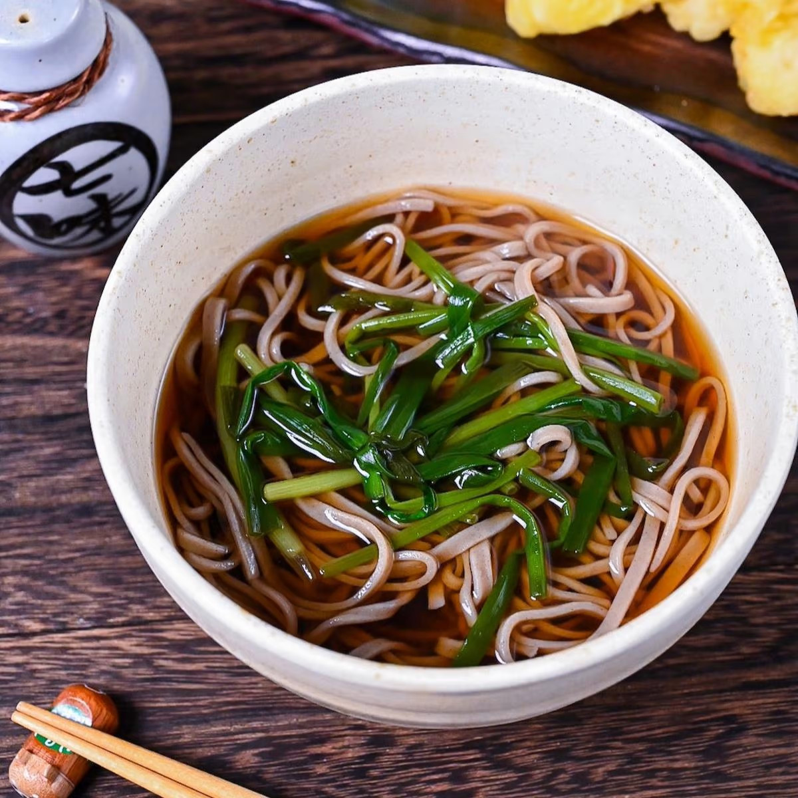

Kake Soba (New Year's Eve Soba Noodle Soup)

Description
Learn how to make this essential kake soba made with buckwheat noodles served in a delicious hot dashi soup. It's tasty, warming and typically enjoyed on New Year's Eve in Japan!
Ingredients
- 2 portions of soba noodles
- 500ml (2 cups) dashi
- 20ml (4 tsp) dark soy sauce
- 20ml (4 tsp) light soy sauce
- 50ml (3 ½ tbsp) mirin
- 5ml (1 tsp) sake
- 30g spring onion shoots (hosonegi) cut into 5cm pieces
- Shichimi togarashi (Japanese chili powder) to garnish
Steps
- Cook the soba noodles according to the packaging.
- Add the dashi, dark soy sauce, light soy sauce, mirin and sake to a separate saucepan and bring to a boil.
- Once boiling, lower to a simmer and add the spring onion. Allow to simmer for 2-3 minutes.
- ivide the cooked soba into serving bowls and pour the broth over the top.
- Place the cooked spring onion on top of each bowl.
- Sprinkle shichimi (optional) or your choice of additional toppings (see in post).
- Enjoy!